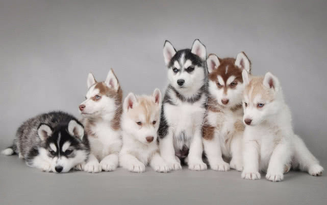

- 首页
- 会员
- 宠物百科
- 管理员注册
了解狗狗
犬，通常指家犬，也称狗，一种常见的犬科哺乳动物。
通常被称为“人类最忠实的朋友”，也是饲养率最高的宠物。
其寿命约为十-三十多年，若无发生意外，平均寿命以小型犬为长。
这一生，很短，这一生，也很长，感谢每一只在我们生命里经过的狗子。
谢谢你们的忠诚，谢谢你们的无私陪伴，谢谢你这一生，为我们带来的快乐。
狗狗简介
 狗是陪伴人类时间最长的宠物，因为它们天性喜欢喝人类相处，喜欢人类宠着它陪它玩，甚至你不陪它玩的话，它还会产生嫉妒心。狗不喜独处，狗特别害怕孤独，不管是大型犬还是小型犬，在它们自己的心目中，永远都是个小宝宝需要主人的呵护。狗非常喜欢与人交往甚至胜过同类。喜欢与人交往是狗天生的习性，不仅仅是因为与人交往可以得到照顾，更主要是因为狗是一种有灵性的动物，听觉灵敏，嗅觉惊人，记忆力也强，在与人为伴的过程中能建立感情，对主人有强烈的保护心理。狗会从水中、失火的房子里以及其他灾难中救援主人，如果狗的主人去世，狗会悲伤，有的不吃不喝，有的对任何事情都无精打采，有的为了主人牺牲了自己的性命，真实感人的故事很多，这也是狗成为最受家庭喜欢的宠物的主要原因。
宠物狗分类
玩赏犬：博美犬、巴哥犬、贵宾犬、蝴蝶犬、京巴犬、吉娃娃、西施犬、 约克夏、玛尔济斯犬、中国冠毛犬、查理王小猎犬
家庭犬：大麦町斑点犬、法国斗牛犬、卷毛比雄犬、灵提犬、日本柴犬、松狮犬、沙皮犬、英国斗牛犬
牧羊犬：澳洲牧羊犬、边境牧羊犬、比利时牧羊犬、德国牧羊犬、古代牧羊犬、苏格兰牧羊犬、喜乐蒂牧羊犬、中亚牧羊犬
免责声明：狗铺子网所有宠物狗交易信息内容系用户自行发布，其真实性、合法性由发布人负责，该商场不提供任何保证，亦不承担任何法律责任！
张潇 Copyright © 2008 - 2020 congwushangdian.com All Rights Reserved